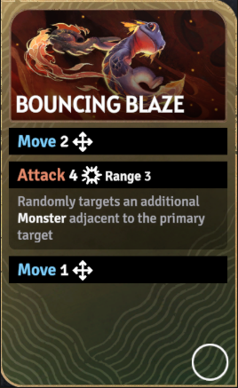
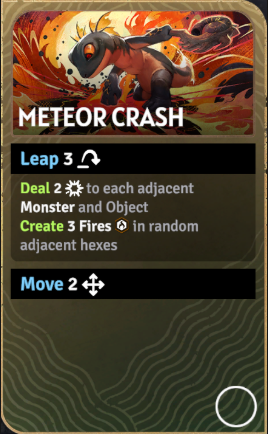
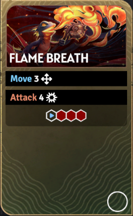
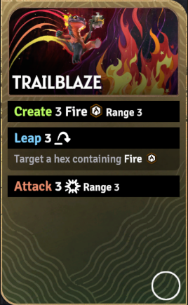
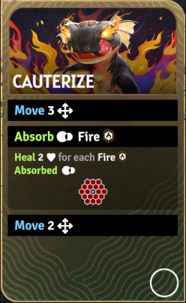
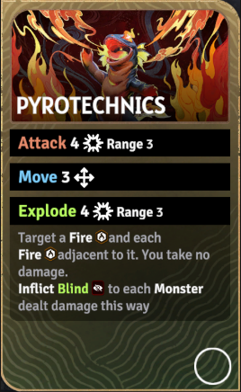
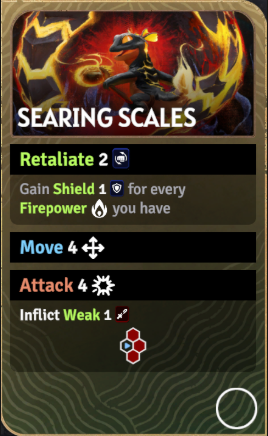
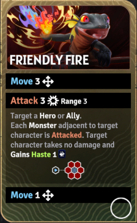
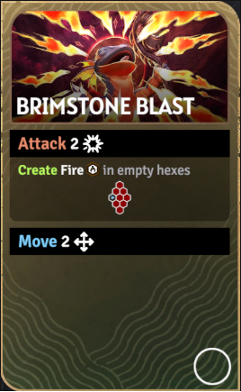
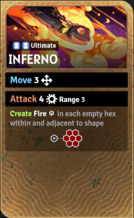

炎术师（Pyromancer）
定位：范围输出、火场运营、爆发。她通过铺火、踩火和引爆火场来持续扩大范围伤害价值。
火场范围输出火力环境联动

被动技能
火焰之心
炎术师踩在火焰上不会受伤，并能累积火力。她的被动让地图上的火场既是输出资源，也是移动线路和续航条件的一部分。
专属机制
炎术师不是只看单卡面板，而是看“火焰铺设密度”。只要提前布火成功，她后续每张卡都更容易打出更高范围收益。
技能清单与详细描述

技能卡牌图弹跳烈焰（Bouncing Blaze）
技能消耗：无
移动 2。
攻击 4（射程 3）。
随机命中主目标相邻的另一个怪物。
再移动 1。

技能卡牌图陨星坠击（Meteor Crash）
技能消耗：无
跳跃 3。
对每个相邻怪物和物件造成 2 点伤害。
随机在相邻格创建 3 个火焰。
再移动 2。

技能卡牌图烈焰吐息（Flame Breath）
技能消耗：无

技能卡牌图开道火径（Trailblaze）
技能消耗：无
生成 3 个火焰（射程 3）。
跳跃 3 到一个带火焰的格子。
攻击 3（射程 3）。

技能卡牌图灼烧愈合（Cauterize）
技能消耗：无
移动 3。
吸收 2 格内所有火焰。
每吸收 1 个火焰，回复 2 点生命。
再移动 2。

技能卡牌图焰火爆裂（Pyrotechnics）
技能消耗：无
攻击 4（射程 3）。
移动 3。
引爆 4（射程 3）。
目标一个火焰以及与之相邻的每个火焰。
你自己不受伤。
被这种方式命中的怪物受到致盲。

技能卡牌图灼鳞护甲（Searing Scales）
技能消耗：无
反击 2。
按你持有的每层火力获得护盾 1。
再移动 4。
最后攻击 4（连相邻格范围效果）。
附加虚弱 1。

技能卡牌图友军火焰（Friendly Fire）
技能消耗：无
移动 3。
攻击 3（射程 3），但目标是一个英雄或友军。
其相邻的每个怪物都会被攻击。
该友军不受伤并获得急速 1。
再移动 1。

技能卡牌图硫火爆轰（Brimstone Blast）
技能消耗：无
攻击 2（宽锥形延伸 2 格范围效果）。
在形状内空格创建火焰。
再移动 2。

技能卡牌图终极技·炼狱（Inferno）
技能消耗：无
移动 3。
攻击 4 / 5 / 6（射程 3，小六边形范围效果）。
在形状内和相邻的每个空格创建火焰。
随后再移动 0 / 2 / 3。
来源：?a href="https://sunderfolk.siteswiki.org/heroes/pyromancer">炎术师页面（Pyromancer）。
推荐技能组
火场引爆方向
推荐理由：先铺第一批火，再用硫火爆轰扩大火场覆盖，最后以焰火爆裂把多处火点一次性引爆，适合处理中型怪群。
范围清场方向
推荐理由：硫火爆轰负责迅速扩散火场，开道火径补机动和落点，焰火爆裂则在怪物站位成型时完成范围收束。
续航支援方向
推荐理由：这一组偏续航与团队容错，先把已有火焰转成回复，再靠灼鳞护甲顶住近身压力，友军火焰则让前排也能参与扩散伤害。